视觉 Moodboard（按 direction-seed 分栏）
步骤 4 产出 · 每图带 source-id · 只含视觉审美来源（交易 UX 参考站严禁入内，见 product-ux-board.html）· 借用原则见 aesthetic-principles.md
Seed A · 暗端终端（cyberpunk 主导 / synthwave 光）
主导 VS-002 VS-007 · 桥 BRAND 回声机制 + CRT 分区 · 原则 A1/A3/A4/A6
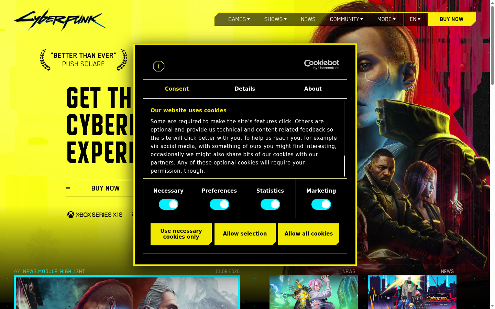
VS-002 做旧分区、黄字直读（高对比暗底）
borrow A1/A6 · do-not-copy CDPR 资产
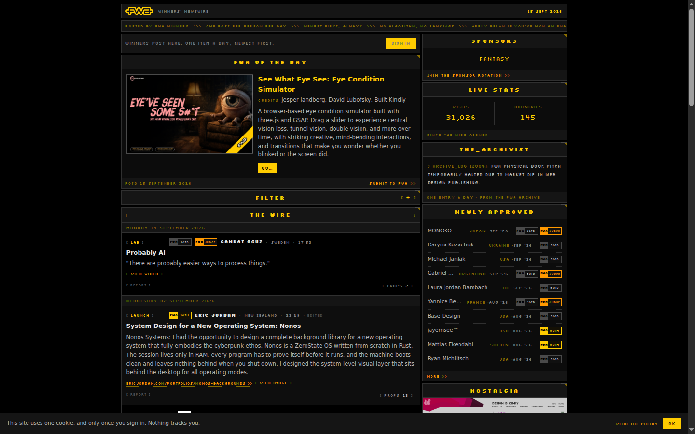
VS-007 raw 终端列表：字重/缩进/分隔线做层级
borrow A3/A5
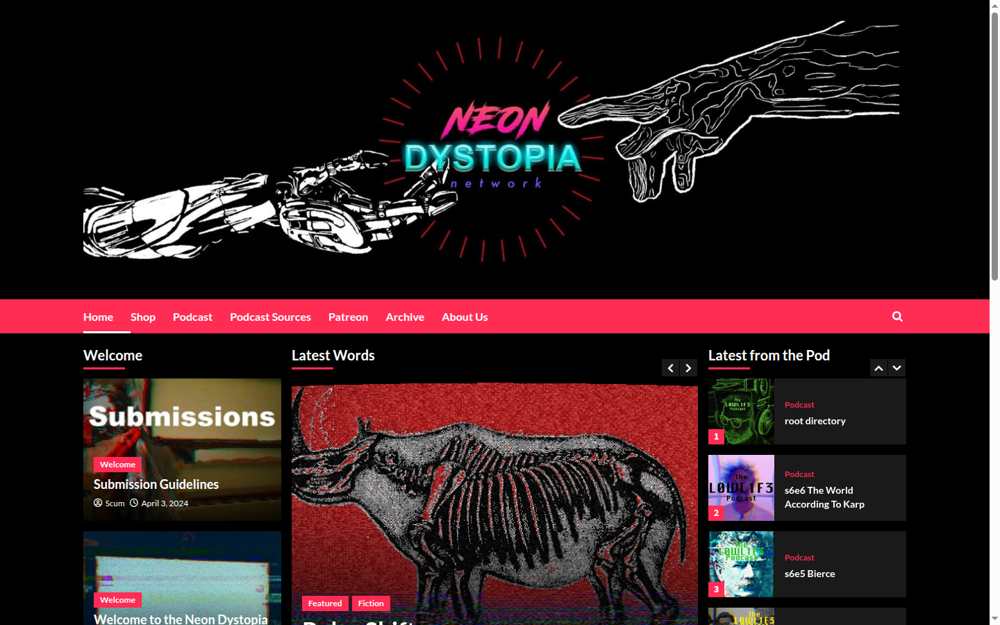
VS-004 暗底高密度杂志网格
borrow A3
Seed B · 日地平线（synthwave 主导 / cyberpunk 数据层）
主导 VS-001 · 桥「光源在地平线」隔离律 · 原则 A2/B1/B3
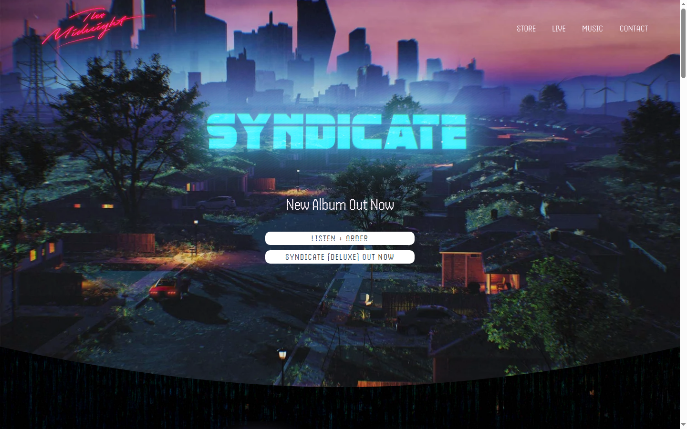
VS-001 地平线光 + 单屏视觉主体
adapt B1 渐变仅背景层 · do-not-copy 专辑艺术
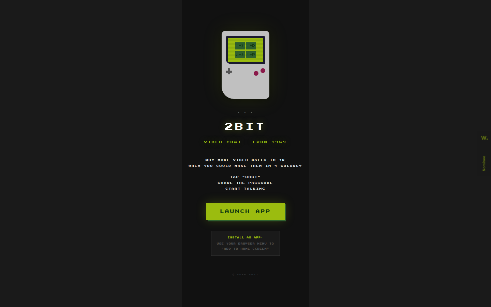
VS-006 终端隐喻界面化（数据层参考）
adapt B3
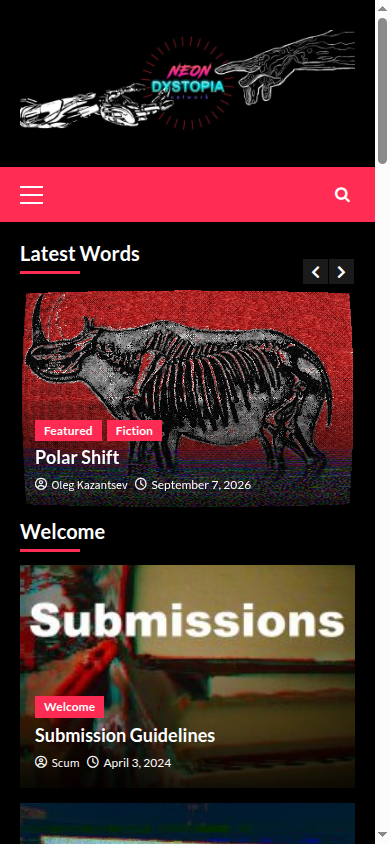
VS-004 移动端暗底列表折叠
borrow A3
Seed C · 霓虹编辑部（editorial 主导 / synthwave 色彩化）
主导 VS-004 VS-007 · 桥「霓虹仅做交互色」 · 原则 A3/A5/A9
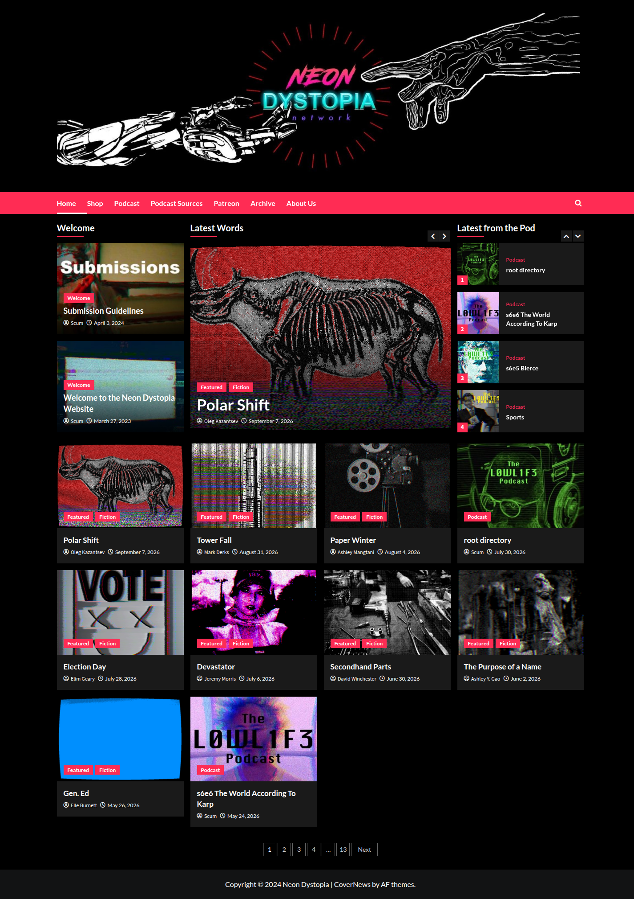
VS-004 全页编辑网格与密度
borrow A3/A9
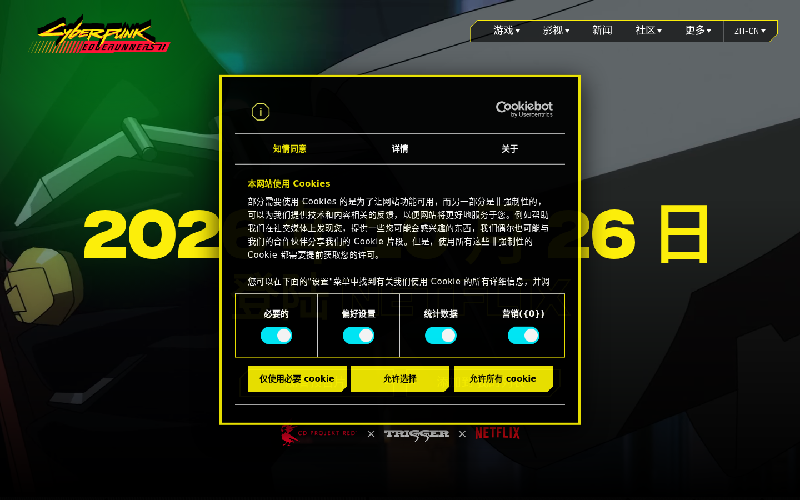
VS-003 双语层叠排印（品红/青功能化的对照）
adapt B6 · do-not-copy 动画剧照
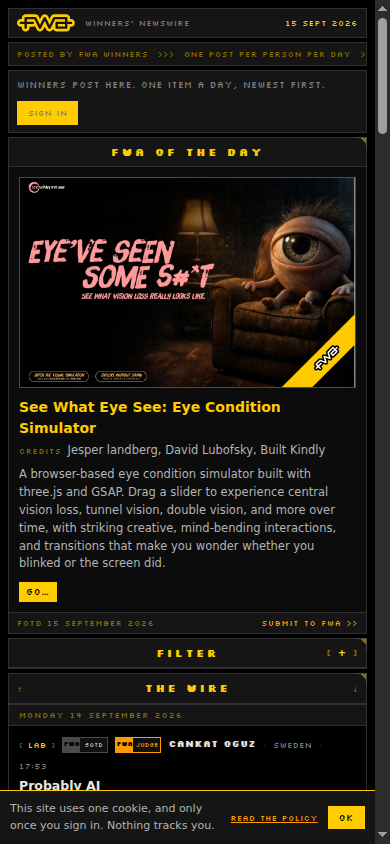
VS-007 移动端条律层级
borrow A5
品牌融合锚（BRAND · licensed-for-product）
已验证的融合机制：单一主光源 + 错位回声 + CRT 分区纹理——引用原理，不照抄画面
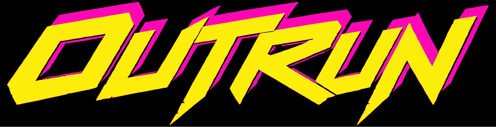
BRAND-01 OUTRUN 双色字标：黄主光 + 品红回声 + 磨损碎片
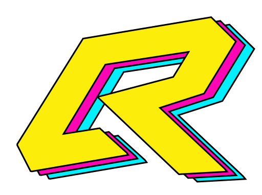
BRAND-04 OR monogram 三级级联错位（+64,+26 / +128,+52）